| Sample | Cu | Zn | Pb | Fe | Ni | Ag | Sb | As | Co | Cd | Sn | Te | Bi | Mn | Li | Al | V | Cr | Rb | Sr | Ba | Cu_Zn |
|---|---|---|---|---|---|---|---|---|---|---|---|---|---|---|---|---|---|---|---|---|---|---|
| S1 | 73 | 21 | 5.60 | 0.30 | 580 | 146.0 | 55.7 | 9.85 | 2.79 | 12.2 | 9.70 | 0.57 | 41.4 | 19.9 | 5.55 | 11.50 | 3.71 | 3.17 | 0.08 | 1.00 | 0.19 | 3.5 |
| S2 | 87 | 16 | 4.29 | 0.53 | 534 | 199.0 | 132.0 | 36.40 | 8.44 | 20.0 | 4.80 | 1.00 | 72.8 | 20.8 | 2.17 | 4.46 | 1.55 | 1.31 | 0.07 | 0.15 | 0.18 | 5.5 |
| S3 | 73 | 28 | 5.91 | 0.78 | 451 | 131.0 | 105.0 | 23.80 | 8.47 | 16.5 | 6.70 | 0.64 | 29.0 | 15.7 | 4.00 | 8.89 | 3.33 | 2.70 | 0.14 | 8.90 | 0.35 | 2.6 |
| S4 | 80 | 20 | 6.17 | 0.39 | 558 | 171.0 | 70.0 | 11.10 | 4.83 | 11.9 | 9.34 | 0.82 | 60.7 | 23.2 | 6.16 | 13.80 | 6.08 | 4.91 | 0.14 | 0.29 | 0.39 | 3.9 |
| S5 | 78 | 22 | 3.87 | 0.55 | 513 | 156.0 | 67.0 | 14.50 | 6.49 | 5.3 | 7.69 | 0.58 | 58.7 | 23.3 | 3.87 | 11.60 | 4.38 | 3.69 | 0.12 | 0.91 | 0.45 | 3.5 |
| S6 | 81 | 22 | 6.51 | 0.19 | 579 | 159.0 | 60.3 | 8.32 | 1.88 | 9.6 | 8.54 | 0.96 | 61.4 | 15.7 | 2.12 | 4.36 | 2.29 | 1.90 | 0.11 | 0.45 | 0.75 | 3.7 |
| S7 | 75 | 20 | 6.45 | 0.33 | 559 | 130.0 | 107.0 | 211.00 | 3.37 | 11.6 | 17.60 | 0.80 | 51.0 | 22.3 | 1.75 | 5.50 | 2.16 | 1.57 | 0.13 | 0.34 | 0.50 | 3.8 |
| S8 | 82 | 24 | 6.13 | 0.31 | 548 | 160.0 | 75.4 | 9.66 | 3.19 | 7.6 | 6.98 | 0.83 | 58.5 | 23.7 | 1.99 | 13.30 | 3.55 | 2.36 | 0.11 | 1.45 | 0.26 | 3.4 |
| S9 | 80 | 18 | 4.63 | 0.44 | 482 | 159.0 | 109.0 | 24.20 | 5.28 | 30.5 | 3.92 | 0.91 | 91.3 | 23.7 | 1.69 | 8.40 | 2.70 | 1.78 | 0.07 | 0.11 | 0.43 | 4.4 |
| S10 | 72 | 28 | 5.92 | 0.76 | 435 | 105.0 | 111.0 | 23.50 | 8.29 | 16.2 | 6.65 | 0.61 | 27.6 | 19.5 | 1.23 | 6.77 | 2.00 | 1.41 | 0.12 | 0.21 | 0.30 | 2.5 |
| S11 | 76 | 19 | 5.93 | 0.43 | 525 | 138.0 | 53.2 | 15.10 | 5.13 | 8.5 | 8.29 | 0.86 | 54.5 | 12.9 | 0.92 | 6.57 | 1.71 | 1.28 | 0.10 | 0.56 | 0.24 | 4.1 |
| S12 | 69 | 17 | 6.67 | 0.50 | 657 | 141.0 | 50.1 | 13.80 | 4.45 | 8.3 | 8.14 | 0.87 | 55.0 | 13.4 | 1.20 | 3.22 | 1.65 | 1.10 | 0.10 | 3.13 | 0.22 | 4.1 |
| S13 | 78 | 20 | 3.30 | 1.06 | 458 | 189.0 | 549.0 | 197.00 | 1.60 | 17.3 | 38.30 | 1.00 | 181.0 | 86.6 | 1.55 | 9.28 | 3.08 | 2.23 | 0.07 | 0.52 | 1.17 | 4.0 |
| S14 | 74 | 25 | 4.70 | 0.44 | 433 | 81.7 | 88.2 | 14.60 | 5.08 | 20.3 | 1.98 | 0.71 | 26.1 | 29.7 | 1.13 | 6.51 | 2.49 | 1.55 | 0.10 | 0.17 | 0.19 | 3.0 |
| S15 | 84 | 20 | 5.20 | 0.14 | 549 | 171.0 | 107.0 | 20.60 | 1.06 | 23.4 | 4.24 | 0.95 | 92.0 | 12.0 | 0.74 | 3.44 | 1.58 | 1.08 | 0.08 | 0.08 | 0.17 | 4.1 |
| S16 | 82 | 19 | 4.72 | 0.16 | 560 | 162.0 | 103.0 | 19.90 | 1.14 | 22.2 | 4.00 | 0.89 | 82.1 | 12.4 | 0.67 | 21.20 | 2.32 | 2.53 | 0.08 | 0.31 | 0.31 | 4.2 |
| S17 | 77 | 20 | 6.92 | 0.79 | 500 | 177.0 | 153.0 | 54.70 | 9.06 | 31.8 | 65.80 | 0.81 | 27.9 | 5.8 | 0.40 | 3.31 | 0.93 | 0.67 | 0.08 | 7.27 | 0.35 | 3.8 |
| S18 | 83 | 19 | 4.57 | 0.44 | 515 | 158.0 | 111.0 | 22.10 | 5.09 | 28.4 | 3.80 | 0.99 | 89.3 | 21.5 | 0.52 | 4.08 | 1.69 | 1.01 | 0.09 | 11.80 | 0.27 | 4.4 |
| S19 | 71 | 28 | 5.25 | 0.72 | 494 | 114.0 | 101.0 | 38.10 | 6.14 | 18.5 | 10.40 | 0.72 | 33.6 | 17.7 | 1.49 | 8.36 | 2.61 | 1.54 | 0.16 | 4.89 | 3.37 | 2.6 |
| S20 | 76 | 19 | 6.31 | 0.41 | 535 | 139.0 | 51.5 | 14.00 | 4.41 | 8.2 | 8.11 | 0.97 | 56.3 | 13.4 | 0.62 | 2.91 | 1.34 | 0.79 | 0.06 | 0.42 | 0.40 | 4.1 |
| S21 | 74 | 21 | 4.88 | 0.49 | 423 | 80.0 | 68.0 | 14.40 | 5.67 | 22.5 | 1.99 | 0.91 | 25.3 | 26.3 | 0.42 | 2.49 | 0.97 | 0.59 | 0.07 | 0.70 | 0.23 | 3.5 |
| S22 | 71 | 21 | 6.00 | 0.93 | 606 | 142.0 | 175.0 | 55.30 | 15.03 | 11.8 | 42.00 | 0.56 | 46.3 | 25.7 | 0.85 | 11.60 | 2.82 | 2.19 | 0.12 | 15.10 | 3.61 | 3.4 |
| S23 | 72 | 22 | 6.18 | 0.33 | 623 | 121.0 | 67.2 | 9.12 | 2.61 | 11.6 | 9.07 | 0.58 | 40.1 | 18.3 | 0.73 | 5.38 | 2.52 | 1.45 | 0.11 | 0.08 | 0.14 | 3.3 |
| S24 | 76 | 18 | 6.49 | 0.28 | 645 | 172.0 | 52.5 | 9.43 | 1.94 | 9.1 | 9.75 | 1.00 | 79.7 | 14.6 | 0.40 | 3.76 | 1.39 | 0.86 | 0.08 | 0.15 | 0.28 | 4.3 |
| S25 | 78 | 18 | 1.05 | 0.75 | 496 | 162.0 | 32.2 | 56.70 | 0.34 | 5.0 | 4.10 | 0.91 | 49.8 | 29.5 | 0.61 | 5.31 | 2.02 | 1.27 | 0.09 | 0.17 | 0.32 | 4.3 |
| S26 | 75 | 20 | 6.35 | 0.45 | 543 | 137.0 | 57.1 | 9.50 | 4.95 | 11.2 | 8.29 | 0.85 | 58.6 | 23.4 | 0.49 | 14.60 | 1.69 | 1.10 | 0.07 | 0.19 | 0.25 | 3.8 |
| S27 | 72 | 20 | 6.48 | 0.41 | 558 | 140.0 | 54.5 | 9.10 | 4.34 | 10.6 | 8.19 | 0.89 | 57.0 | 18.4 | 0.36 | 3.05 | 1.49 | 0.85 | 0.07 | 6.73 | 0.26 | 3.7 |
| S28 | 76 | 21 | 5.91 | 0.83 | 471 | 172.0 | 139.0 | 46.50 | 8.88 | 54.7 | 1.89 | 0.66 | 27.0 | 12.5 | 0.41 | 6.32 | 2.03 | 1.60 | 0.09 | 4.00 | 4.59 | 3.6 |
| S29 | 69 | 28 | 6.57 | 0.81 | 492 | 121.0 | 122.0 | 26.40 | 7.79 | 18.8 | 9.63 | 0.71 | 33.3 | 22.1 | 0.53 | 5.25 | 2.74 | 1.81 | 0.13 | 0.93 | 0.38 | 2.5 |
| S30 | 86 | 16 | 4.61 | 0.57 | 467 | 196.0 | 158.0 | 37.70 | 10.40 | 19.8 | 4.90 | 0.99 | 74.2 | 22.5 | 0.19 | 2.16 | 1.13 | 0.67 | 0.07 | 0.28 | 0.20 | 5.4 |
| S31 | 77 | 25 | 5.25 | 0.73 | 400 | 89.0 | 101.0 | 18.40 | 9.98 | 22.6 | 2.89 | 0.68 | 26.3 | 32.6 | 0.31 | 3.96 | 1.80 | 1.05 | 0.10 | 0.14 | 0.24 | 3.1 |
| S32 | 82 | 22 | 7.22 | 0.72 | 461 | 148.0 | 148.0 | 42.80 | 9.05 | 53.8 | 2.84 | 0.95 | 39.1 | 14.0 | 0.39 | 4.74 | 2.51 | 1.55 | 0.12 | 0.18 | 0.31 | 3.7 |
| S33 | 82 | 20 | 5.14 | 0.45 | 492 | 166.0 | 117.0 | 22.80 | 5.26 | 28.5 | 3.59 | 1.00 | 87.4 | 21.8 | 0.14 | 2.02 | 1.00 | 0.59 | 0.06 | 0.33 | 0.16 | 4.2 |
| S34 | 80 | 16 | 4.48 | 0.47 | 468 | 187.0 | 132.0 | 33.80 | 7.64 | 18.8 | 4.52 | 1.02 | 70.4 | 18.7 | 0.14 | 2.18 | 0.89 | 0.57 | 0.06 | 0.09 | 0.19 | 5.0 |
| S35 | 78 | 19 | 6.62 | 0.24 | 539 | 174.0 | 57.4 | 9.02 | 1.91 | 8.9 | 9.78 | 0.99 | 80.3 | 14.4 | 0.17 | 2.63 | 1.31 | 0.72 | 0.08 | 0.24 | 0.17 | 4.2 |
| S36 | 78 | 20 | 7.71 | 0.18 | 683 | 175.0 | 64.8 | 7.04 | 2.36 | 6.4 | 6.57 | 1.00 | 62.0 | 14.2 | 0.30 | 5.24 | 2.19 | 1.97 | 0.11 | 0.42 | 0.23 | 3.9 |
| S37 | 75 | 23 | 6.63 | 0.23 | 464 | 131.0 | 66.0 | 7.51 | 3.35 | 9.7 | 5.62 | 0.65 | 40.6 | 15.2 | 0.10 | 2.68 | 1.23 | 1.02 | 0.09 | 2.88 | 0.12 | 3.2 |
| S38 | 90 | 21 | 2.33 | 0.38 | 656 | 165.0 | 125.0 | 201.00 | 0.90 | 24.8 | 15.70 | 1.75 | 151.0 | 79.1 | 0.40 | 8.97 | 3.95 | 2.34 | 0.22 | 2.20 | 0.42 | 4.3 |
A Review of A Multivariate Approach to the Study of Orichalcum ingots from the Underwater Gela’s Archaeological Site
1. Introduction
1.1 Brief description of Orichalcum ingots study Capometti et al, study
Caponetti et al were doing a study to determine major & trace elements of the orichalcum ingots. They used that data to find a correlation between the observed different features and the composition.
Our analysis includes only a chemometric analysis of the ingots. It does not include the data about physical appearance of the ingots or any correlation analysis of those variables.
Their motivation was to create a starting point for giving insight into archaeometric study of the orichalcum ingots regarding their origin and manufacture technologies.
Our study also has the same motivations. We aim to provide a high level data analysis to provide a detailed, and logical, path to a linkage analysis.
Historically, discoveries of orichalcum have had questionable identification methods. A common
Motivation, problem statement, approach, results, conclusions.
1.2 Table of the Raw data
1.3 Our Aim
Why do we care about the problem and the results?
Because it could lead to further impressive archaeological finds
What is the scope of the work and what problem is this paper trying to solve?
Determine whether or not any of the ingots could be grouped. The scope is mapping orichalcum origin.
What was done to solve this problem?
More destructive testing to determine trace elements.
What implications does the answer imply?
Our goal is to create and present a comprehensive, comprehensible, reproducible, and replicable multivariate analysis of the data obtained from the chemometric elemental analysis of 38 orichalcum ingots that were discovered in a 6th Century BC shipwreck off the coast Gela, Italy in 2015.
1.4 Our hypothesis
one of our hypotheses questions is whether our data follows a multivariate normal distribution. probably some hypotheses around the clusterings.
2. EDA
2.1 Brief summary of lab techniques used to gather the the data
Data obtained for the table above containing the main component, trace element concentrations and Cu/Zn weight ratio was obtained by Inductively coupled plasma optical emission spectroscopy (ICP-OES) and Inductively coupled plasma mass spectrometry (ICP-MS) techniques (Caponetti et al). Collecting samples from 38 ancient ingots (they originally collected 40) to analysis the association between the ingots composition.
This is the largest sample of its kind however it is still not a large sample.
For the analysis of our report we will be considering all the main components and trace element concentrations excluding the Cu/Zn ratio as…
2.2 Brief summary of the data
We started by performing a simple summary of the data in table 1 and creating a box plot to visualize the data. Something to highlight is that the main elements (Cu, Zn, Pb and Fe) are all in percentages, where as the concentrations of the trace elements are in PPM (parts per a million)
| Name | Ingots_F_no[, -1] |
| Number of rows | 38 |
| Number of columns | 21 |
| _______________________ | |
| Column type frequency: | |
| numeric | 21 |
| ________________________ | |
| Group variables | None |
Variable type: numeric
| skim_variable | mean | sd | p0 | p25 | p50 | p75 | p100 | hist |
|---|---|---|---|---|---|---|---|---|
| Cu | 77.42 | 4.98 | 69.00 | 74.00 | 77.00 | 80.75 | 90.00 | ▆▇▆▅▂ |
| Zn | 20.95 | 3.25 | 16.00 | 19.00 | 20.00 | 22.00 | 28.00 | ▃▇▆▂▂ |
| Pb | 5.50 | 1.34 | 1.05 | 4.70 | 5.92 | 6.47 | 7.71 | ▁▁▅▇▆ |
| Fe | 0.50 | 0.23 | 0.14 | 0.33 | 0.44 | 0.72 | 1.06 | ▅▇▂▅▁ |
| Ni | 525.05 | 69.56 | 400.00 | 468.75 | 520.00 | 558.75 | 683.00 | ▃▇▇▂▂ |
| Ag | 149.07 | 29.59 | 80.00 | 132.50 | 157.00 | 171.00 | 199.00 | ▂▂▆▇▂ |
| Sb | 105.16 | 82.28 | 32.20 | 61.42 | 101.00 | 120.75 | 549.00 | ▇▁▁▁▁ |
| As | 36.81 | 51.35 | 7.04 | 10.16 | 20.25 | 37.38 | 211.00 | ▇▁▁▁▁ |
| Co | 5.23 | 3.25 | 0.34 | 2.66 | 5.02 | 7.75 | 15.03 | ▇▇▅▁▁ |
| Cd | 17.81 | 11.38 | 5.00 | 9.62 | 16.35 | 22.42 | 54.70 | ▇▆▂▁▁ |
| Sn | 10.17 | 12.43 | 1.89 | 4.14 | 7.34 | 9.56 | 65.80 | ▇▁▁▁▁ |
| Te | 0.86 | 0.21 | 0.56 | 0.71 | 0.88 | 0.98 | 1.75 | ▃▇▁▁▁ |
| Bi | 60.49 | 32.61 | 25.30 | 39.35 | 56.65 | 73.85 | 181.00 | ▇▆▁▁▁ |
| Mn | 22.54 | 15.51 | 5.80 | 14.45 | 19.70 | 23.37 | 86.60 | ▇▅▁▁▁ |
| Li | 1.23 | 1.44 | 0.10 | 0.40 | 0.64 | 1.54 | 6.16 | ▇▂▁▁▁ |
| Al | 6.57 | 4.29 | 2.02 | 3.34 | 5.28 | 8.77 | 21.20 | ▇▃▂▁▁ |
| V | 2.23 | 1.09 | 0.89 | 1.50 | 2.02 | 2.68 | 6.08 | ▇▆▂▁▁ |
| Cr | 1.60 | 0.92 | 0.57 | 1.01 | 1.43 | 1.95 | 4.91 | ▇▅▂▁▁ |
| Rb | 0.10 | 0.03 | 0.06 | 0.07 | 0.09 | 0.12 | 0.22 | ▇▅▂▁▁ |
| Sr | 2.05 | 3.51 | 0.08 | 0.18 | 0.42 | 2.01 | 15.10 | ▇▁▁▁▁ |
| Ba | 0.59 | 1.00 | 0.12 | 0.21 | 0.28 | 0.40 | 4.59 | ▇▁▁▁▁ |

Ni (nickel) has the widest interquartile range, indicating the greatest variation among the samples, while Sb (antimony) shows the largest total range, driven enlarge by sample 13. Unfortunately due to the fact the data has a large range of concentrates (ranging from a minimum of 0.06 for Rb and a max of 683 for Ni) we will have to consider some transformations to allow for this massive difference in concentrations. looking at the raw data we also noticed some interesting outliers particularly the 549 for sample 13 for Sb (antimony), which the original paper noted as well. We will need to perform transformations on the data as we have a combination of percentages, PPM, major outliers.
But first we will be taking a deeper dive into Copper, Zinc, Lead and Tin as they are the four alloying elements that define orichalcum (probably need a reference for this) we won’t be considering Fe due to it being a impurity.
| Name | Ingots_F_no[, c(2, 3, 4, … |
| Number of rows | 38 |
| Number of columns | 4 |
| _______________________ | |
| Column type frequency: | |
| numeric | 4 |
| ________________________ | |
| Group variables | None |
Variable type: numeric
| skim_variable | mean | sd | p0 | p25 | p50 | p75 | p100 | hist |
|---|---|---|---|---|---|---|---|---|
| Cu | 77.42 | 4.98 | 69.00 | 74.00 | 77.00 | 80.75 | 90.00 | ▆▇▆▅▂ |
| Zn | 20.95 | 3.25 | 16.00 | 19.00 | 20.00 | 22.00 | 28.00 | ▃▇▆▂▂ |
| Pb | 5.50 | 1.34 | 1.05 | 4.70 | 5.92 | 6.47 | 7.71 | ▁▁▅▇▆ |
| Sn | 10.17 | 12.43 | 1.89 | 4.14 | 7.34 | 9.56 | 65.80 | ▇▁▁▁▁ |

Important to note that Cu, Zn, and Pb are still percentages whereas Sn is PPM, not that there is more tin than lead.
2.2.1 the percentages don’t add up
An interesting/surprising observation of the raw data is that the percentages of the main components (Cu, Zn, Pb, and Fe) don’t add up to 100% for each of the samples as shown in the table below
| Sample | Cu | Zn | Pb | Fe | percentage_total |
|---|---|---|---|---|---|
| S1 | 73 | 21 | 5.60 | 0.30 | 99.90 |
| S2 | 87 | 16 | 4.29 | 0.53 | 107.82 |
| S3 | 73 | 28 | 5.91 | 0.78 | 107.69 |
| S4 | 80 | 20 | 6.17 | 0.39 | 106.56 |
| S5 | 78 | 22 | 3.87 | 0.55 | 104.42 |
| S6 | 81 | 22 | 6.51 | 0.19 | 109.70 |
| S7 | 75 | 20 | 6.45 | 0.33 | 101.78 |
| S8 | 82 | 24 | 6.13 | 0.31 | 112.44 |
| S9 | 80 | 18 | 4.63 | 0.44 | 103.07 |
| S10 | 72 | 28 | 5.92 | 0.76 | 106.68 |
| S11 | 76 | 19 | 5.93 | 0.43 | 101.36 |
| S12 | 69 | 17 | 6.67 | 0.50 | 93.17 |
| S13 | 78 | 20 | 3.30 | 1.06 | 102.36 |
| S14 | 74 | 25 | 4.70 | 0.44 | 104.14 |
| S15 | 84 | 20 | 5.20 | 0.14 | 109.34 |
| S16 | 82 | 19 | 4.72 | 0.16 | 105.88 |
| S17 | 77 | 20 | 6.92 | 0.79 | 104.71 |
| S18 | 83 | 19 | 4.57 | 0.44 | 107.01 |
| S19 | 71 | 28 | 5.25 | 0.72 | 104.97 |
| S20 | 76 | 19 | 6.31 | 0.41 | 101.72 |
| S21 | 74 | 21 | 4.88 | 0.49 | 100.37 |
| S22 | 71 | 21 | 6.00 | 0.93 | 98.93 |
| S23 | 72 | 22 | 6.18 | 0.33 | 100.51 |
| S24 | 76 | 18 | 6.49 | 0.28 | 100.77 |
| S25 | 78 | 18 | 1.05 | 0.75 | 97.80 |
| S26 | 75 | 20 | 6.35 | 0.45 | 101.80 |
| S27 | 72 | 20 | 6.48 | 0.41 | 98.89 |
| S28 | 76 | 21 | 5.91 | 0.83 | 103.74 |
| S29 | 69 | 28 | 6.57 | 0.81 | 104.38 |
| S30 | 86 | 16 | 4.61 | 0.57 | 107.18 |
| S31 | 77 | 25 | 5.25 | 0.73 | 107.98 |
| S32 | 82 | 22 | 7.22 | 0.72 | 111.94 |
| S33 | 82 | 20 | 5.14 | 0.45 | 107.59 |
| S34 | 80 | 16 | 4.48 | 0.47 | 100.95 |
| S35 | 78 | 19 | 6.62 | 0.24 | 103.86 |
| S36 | 78 | 20 | 7.71 | 0.18 | 105.89 |
| S37 | 75 | 23 | 6.63 | 0.23 | 104.86 |
| S38 | 90 | 21 | 2.33 | 0.38 | 113.71 |
| Name | main_com[, 6] |
| Number of rows | 38 |
| Number of columns | 1 |
| _______________________ | |
| Column type frequency: | |
| numeric | 1 |
| ________________________ | |
| Group variables | None |
Variable type: numeric
| skim_variable | mean | sd | p0 | p25 | p50 | p75 | p100 | hist |
|---|---|---|---|---|---|---|---|---|
| data | 104.36 | 4.28 | 93.17 | 101.45 | 104.4 | 107.14 | 113.71 | ▁▆▇▇▂ |
Notice that these samples have a mean of 104.4% with a range 93.17% to 113.71%. Where 33 of the 38 samples exceed over 100% the worse being samples 8 and 38 which the original paper where we got our table 1 data from Caponetti et al. study reasoning it is different from 100 is due to errors in low quantity of the available sample.
2.3 Transformations to start of we had a look at the qq-normal plots of the original data and compared it to the log transformed data also to get idea if normality is met and to help gather evidence if our data follows a multivariate normal distribution.
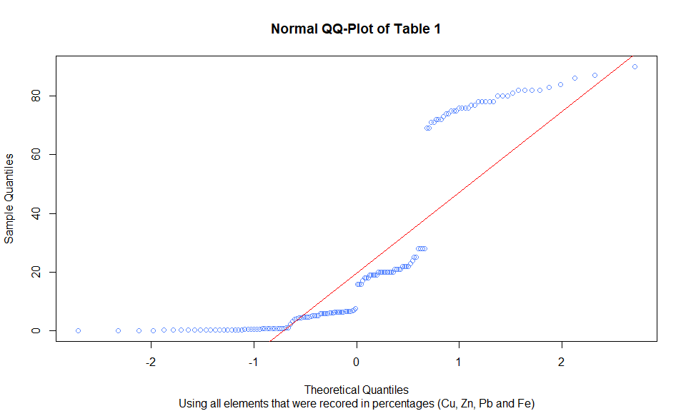
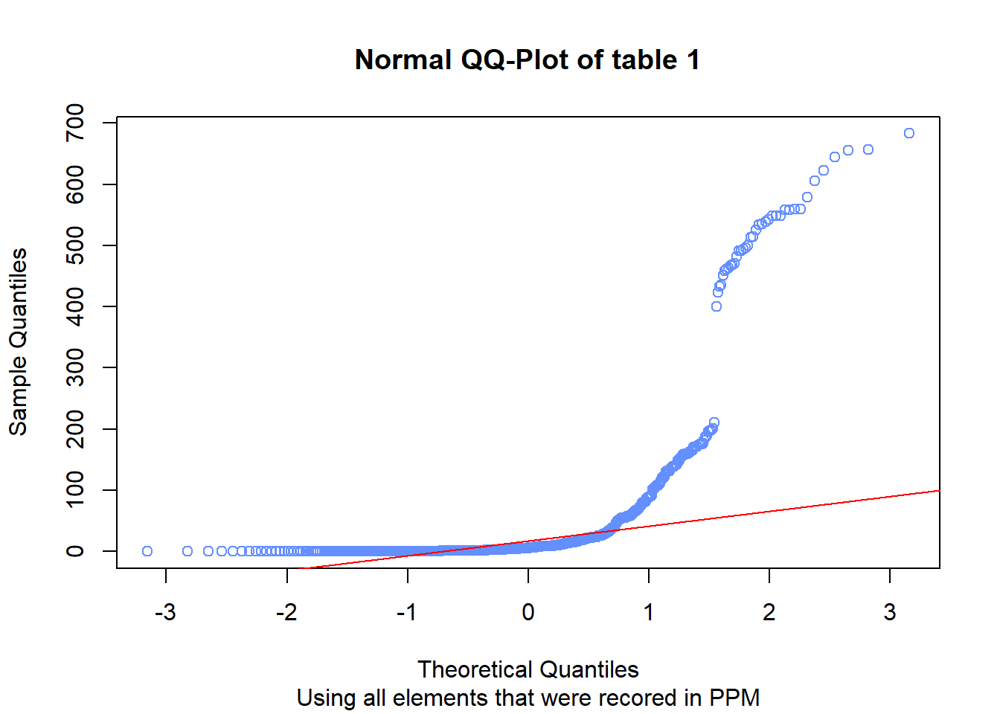
Looking at the QQ-plot with the light blue points (no transformation) we can see some clear deviations in the tails (lower and mostly upper data points), a low amount of points follow the theoretical line (in red), we can assume that our normality assumption wouldn’t hold. hence transformations are needed. Their are also some slight steps in the points as well as a large jump at 1.7. Performing log transformations on the data produces the QQ-plot with blue points. Notice there are slight deviations in the tails (lower and upper data point), but the rest of the points follow the theoretical line (in red), we can assume that our data normality assumption holds. steps in data and long tails, not happy. Median Absolute Deviation (MAD) may be the answer as it is very robust to outliers. Plus we return a lot of negative values after a log transformation. Either need to add a constant to keep values non-negative or normalize data another way. This is where I start considering removing the massive outliers from the data set.
{this maybe wrong as our data is a combination of percentages and PPM - will need to have another look at}
2.3.1 Mad Transformation
MAD used because it is more robust to outliers. A log transformation would fix the skew and pull the outliers in, but not eliminate their mathematical influence.
| Median | Mad | Median_over_Mad | |
|---|---|---|---|
| Cu | 77.000 | 5.189100 | 14.838797 |
| Zn | 20.000 | 2.223900 | 8.993210 |
| Pb | 5.915 | 1.052646 | 5.619173 |
| Fe | 0.445 | 0.207564 | 2.143917 |
| Ni | 520.000 | 65.975700 | 7.881690 |
| Ag | 157.000 | 25.945500 | 6.051146 |
| Sb | 101.000 | 50.260140 | 2.009545 |
| As | 20.250 | 15.989841 | 1.266429 |
| Co | 5.015 | 3.914064 | 1.281277 |
| Cd | 16.350 | 9.562770 | 1.709756 |
| Sn | 7.335 | 3.691674 | 1.986903 |
| Te | 0.880 | 0.170499 | 5.161321 |
| Bi | 56.650 | 26.019630 | 2.177202 |
| Mn | 19.700 | 6.301050 | 3.126463 |
| Li | 0.645 | 0.593040 | 1.087616 |
| Al | 5.280 | 3.409980 | 1.548396 |
| V | 2.025 | 0.904386 | 2.239088 |
| Cr | 1.430 | 0.748713 | 1.909944 |
| Rb | 0.090 | 0.029652 | 3.035208 |
| Sr | 0.420 | 0.415128 | 1.011736 |
| Ba | 0.275 | 0.126021 | 2.182176 |
Notice from this table we can see some massive deviations, as expected. Now use the robust Z score to identify outliers that are candidates for removal. leys et al. (2013) argue the MAD is the most robust scale measure under contamination and recommend a median plus or minus 2.5 time MAD rule for outlier detection. .
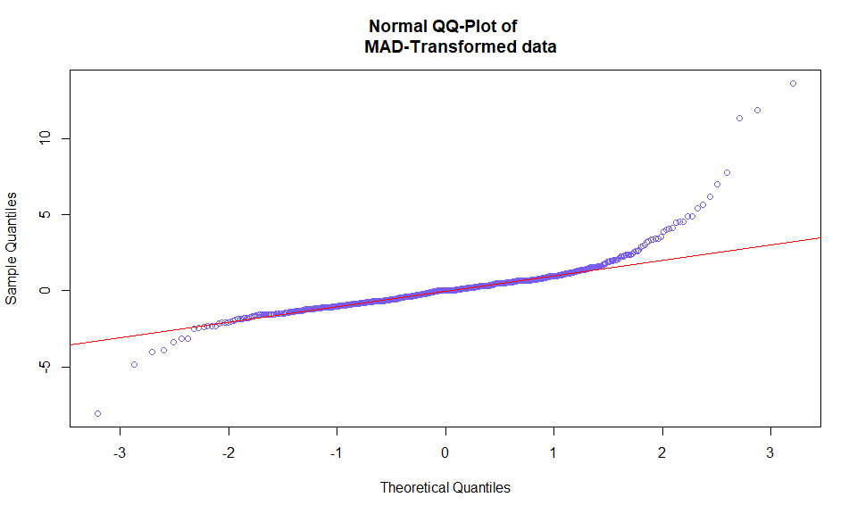
Sample Cu Zn Pb Fe Ni Ag Sb As Co Cd Sn Te Bi Mn
13 S13 78 20 3.30 1.06 458 189 549 197.0 1.60 17.3 38.30 1.00 181.0 86.6
17 S17 77 20 6.92 0.79 500 177 153 54.7 9.06 31.8 65.80 0.81 27.9 5.8
28 S28 76 21 5.91 0.83 471 172 139 46.5 8.88 54.7 1.89 0.66 27.0 12.5
38 S38 90 21 2.33 0.38 656 165 125 201.0 0.90 24.8 15.70 1.75 151.0 79.1
Li Al V Cr Rb Sr Ba
13 1.55 9.28 3.08 2.23 0.07 0.52 1.17
17 0.40 3.31 0.93 0.67 0.08 7.27 0.35
28 0.41 6.32 2.03 1.60 0.09 4.00 4.59
38 0.40 8.97 3.95 2.34 0.22 2.20 0.42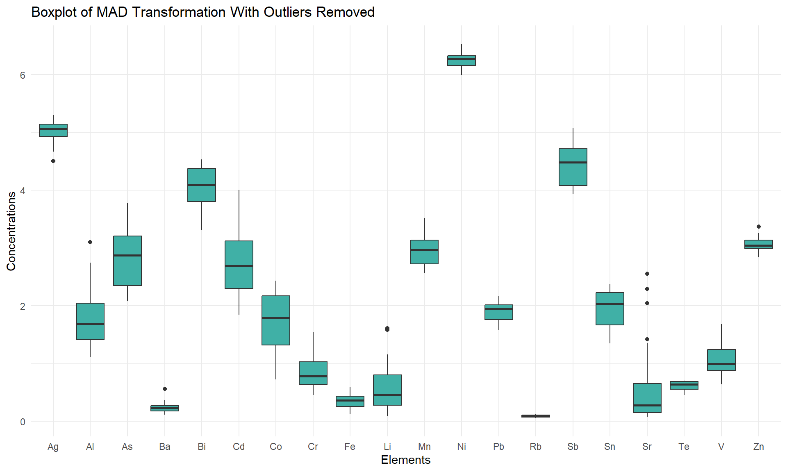
The QQ plot shows very skewed data which we would expected…
What is after we have “cleaned” up the outliers our |z| > 3 rule removes samples 13, 25, and 38 which is exactly the sample ingots that Caponetti et al. set aside as their G4 group.
{should probably explain why cutting out 11 samples will be good for the rest of our analysis, something along the line of outliers, terrible samples and low sample quality}
2.3.1 pairwise between CU, Zn, Pb, and Sn using the clean data
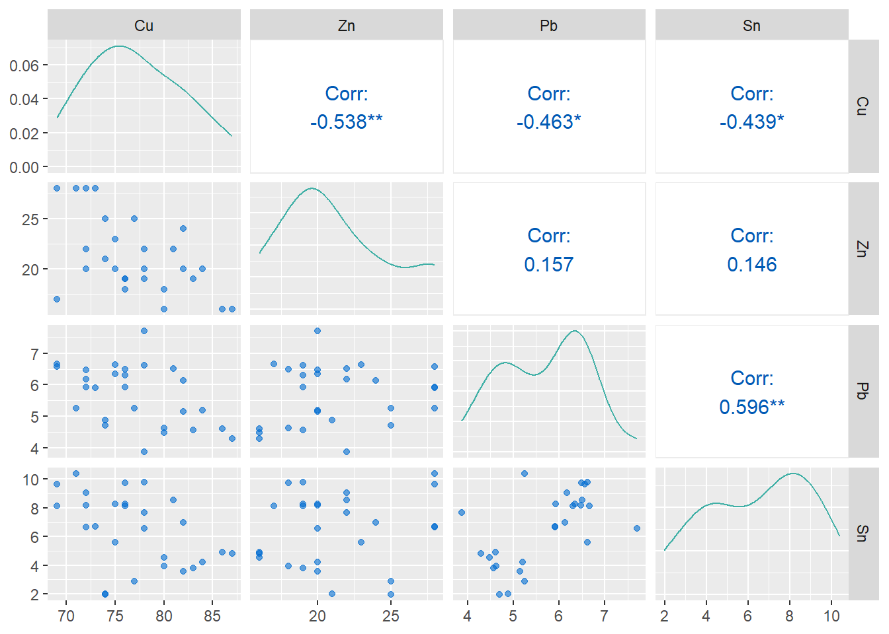
Also done to reflect the traditional primary components that make up orichalcum, showing the relationship between these four elements.
2.4 Multivariate normal distribution
What tests did we use? Henze Zirkler
Why did we use those tests? #ALICE STUFF
Henze_Zirkler Test Results: Test Statistic p.value Method MVN
1 Henze-Zirkler 1.001 <0.001 asymptotic ✗ Not normalHenze_Zirkler Test Results: Test Statistic p.value Method MVN
1 Henze-Zirkler 1 0.046 asymptotic ✗ Not normalDue to our Henze Zirkler test for both the un-transformed data (p-value <0.001) and the transformed data (p-value 0.046) we can safety reject the null hypotheses and conclude that the data regardless if it is transformed or not does not follow a multivariate normal distribution.
As our data isn’t multivariate it isn’t appropriate to perform a mahalanobis distance. {could potentially do need to research tho}
2.5 Correlation plots before and after the transformation
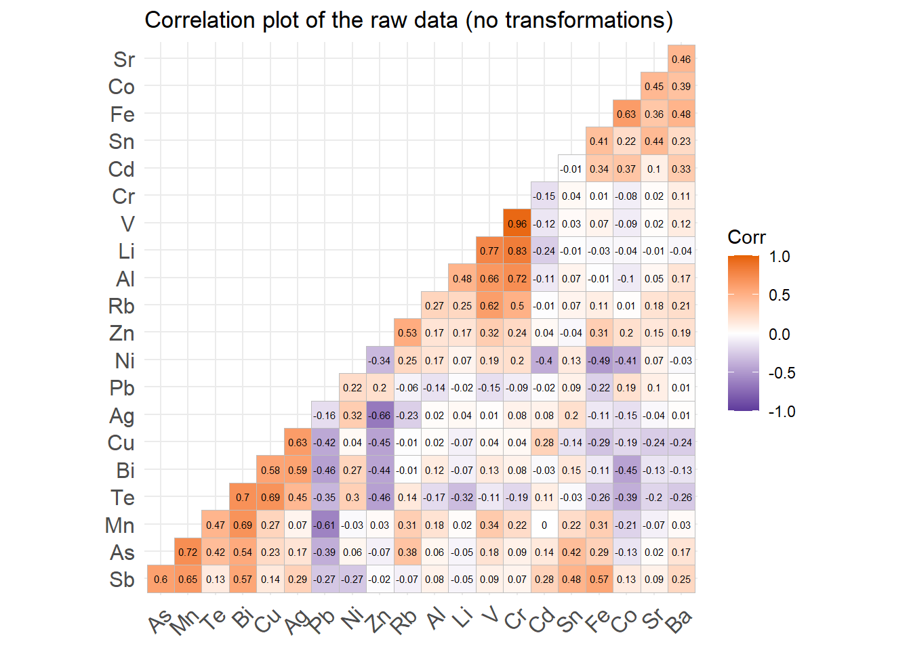
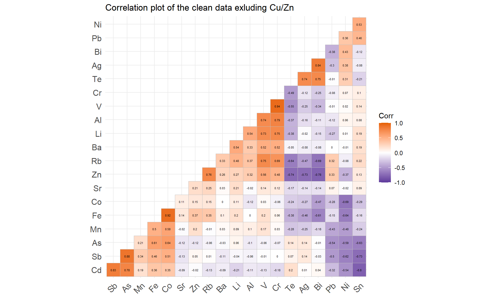
Seeing a lot more correlation in the data with the massive outliers removed. worth keeping and commenting on? Correlation plot some things to highlight; is that the strong positive association between V and Cr for the un-transformed data is also strongly positively association in the transformed data. The transformed data also clearly shows a strong positive association for Bi and Ag which the un-transformed data doesn’t show as significantly. the negative association between Zn and Te becomes more stronger in the transformed data.
The transformation didn’t just strength some of the associations it also happened to reverse the sign for several of the relationships, Bi and Mn was one the raw data had a positive association but the transformed data turned it into a negative association similar with the relation ships between Sb and Sn as well as Rb and Te. It went the other direction (negative to positive) for As and Co. This is a positive sign that the robustness of the transformation, i.e removing some of the outliers demonstrates their influence on the raw data.
3. LDA and Cluster analysis
3.1 PCA
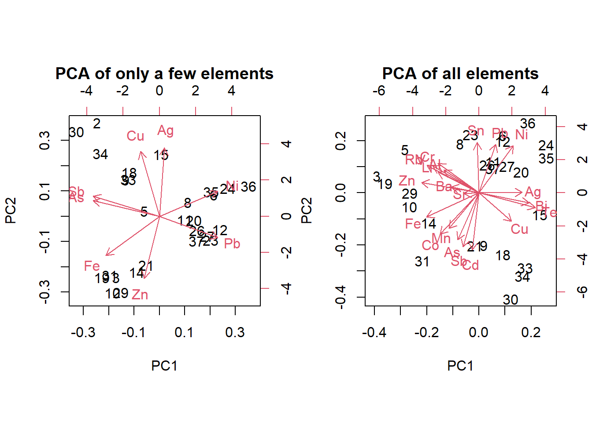
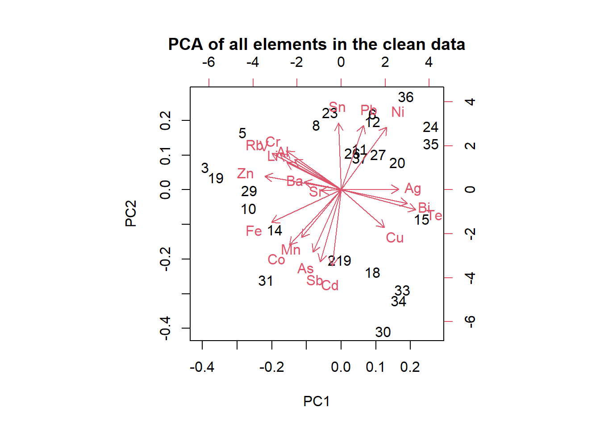
unfortunately as our data isn’t a multivariate normal distribution it is best that we don’t cotine performing a PCA analysis and instead focus on a LDA analysis (based on this article: https://medium.com/@seshu8hachi/pca-vs-lda-no-more-confusion-fc21fb8d06e9)
3.2 LDA and PAM we started by performing a PAM (Partitioning Around Medoids) analysis
| k | avg_silhouette |
|---|---|
| 2 | 0.2034388 |
| 3 | 0.2664019 |
| 4 | 0.2779163 |
| 5 | 0.3101462 |
| 6 | 0.3079801 |
| 7 | 0.2017786 |
| 8 | 0.1778491 |
| 9 | 0.1760813 |
| 10 | 0.1604076 |
| 11 | 0.1586775 |
| 12 | 0.1524900 |
| 13 | 0.1273437 |
| 14 | 0.1047371 |
| 15 | 0.1161656 |
| 16 | 0.1252768 |
| 17 | 0.1504458 |
| 18 | 0.1279253 |
| 19 | 0.1260853 |
| 20 | 0.1158708 |
| 21 | 0.1067803 |
| 22 | 0.1015029 |
| 23 | 0.0930300 |
| 24 | 0.0610310 |
| 25 | 0.0422777 |
| 26 | 0.0270549 |
cluster size ave.sil.width
1 1 7 0.31
2 2 4 0.32
3 3 8 0.54
4 4 4 0.45
5 5 4 0.50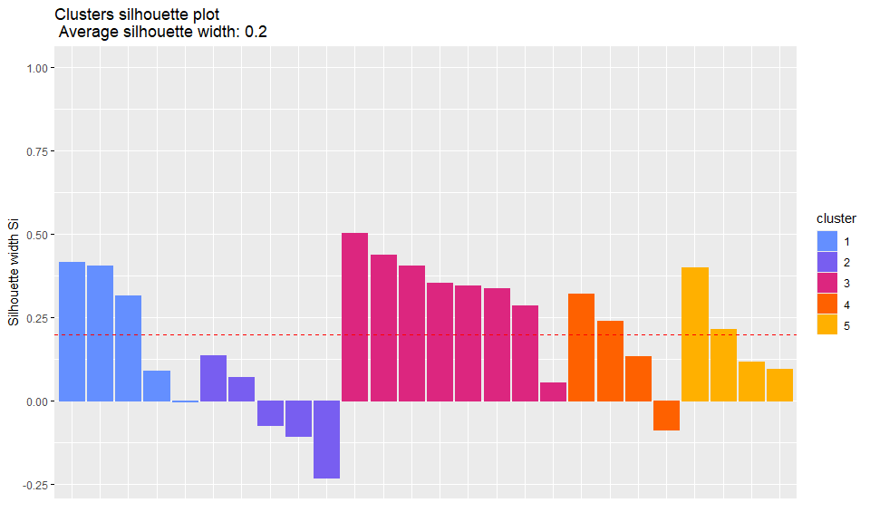
The silhouette value/metric is a measurement of the quality of a clustering. between -1 and 1
Reports optimal silhouette width as 5 with 0.31014624, indicating some weak clustering. Using complete data set or any of the other variations does not affect the suggested average silhouette. Stick with 5. ***6 is also very close.
3.3 Cluster Anaylsis

for the clusting below based on the PAM we wil be taking k = 5

However we may not want to use wards method as …. {ALICE} … hence Manhatten distance cluster may be a better cluster to consider as it more robust to outliers then Eucledian.

Something interesting top note is that for both cluster options they both cluster sample’s 15, 10, and 22 this could be because of …
3.4 Fuzzy Analysis lastly we decided to perform a Fuzzy analysis of the clean data as another form of clustering … {ALICE}
The default value alpha=1 has been set 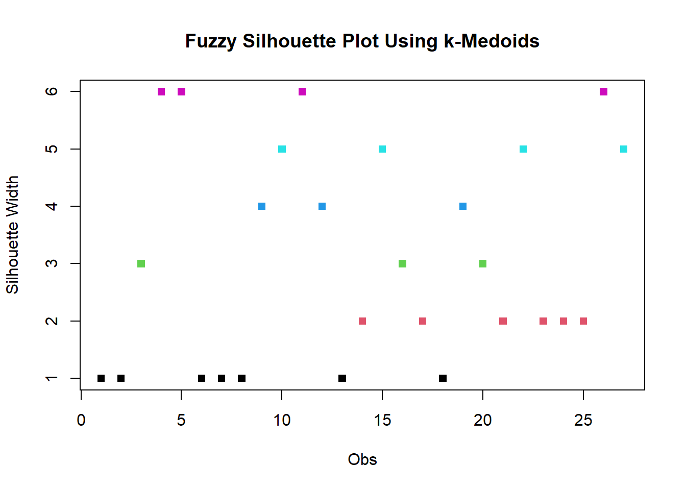
4. Results
Quantity of sample was attributed to error generation. Both samples S38 and S08 had respective quantities 12.3mg and 16.0mg. The average amount of material sampled was reported at ~20mg.
The original study only had access to 38/40 ingots as they were on loan to another institute. This is an extension of that analysis, increasing the sample size at this point of the data analysis would inflate the false positive rate.
5. Discussion
This paper was a further analysis on the paper (insert paper and brief summary here smile), first two authors are the same.
In the initial analysis of the orichalcum ingots, X-Ray Fluorescence (XRF) spectroscopy via a portable spectrometer was used. This study includes that data and further investigates the composition of each ingot. A micro-well was drilled into each ingot and the extracted alloy was
Solved the mystery of the 2 missing ingots, they were on loan to a museum for display purposes.
What makes this discovery so important?
There has never been a discovery of this many ingots in one place. There was evidence of consistent casting processes and 3 distinct groupings of ingots were defined from this veritable hoard. This, again, is important because it provides evidence of multiple ingots of a scarce and highly prized alloy being manufactured in one place at one time.
What is Orichalcum?
Defined as a copper alloy with zinc content as the principal components, and containing a widely varying quantity of lead and tin among other trace elements. There is no consistent proportion to the amount of copper and zinc found, but the overall composition and relative amounts of principal elemental components can be used to deduce the rough date and origin of a sample. The modern equivalent is brass.
What were the limitations of this study?
A study on a sample group this large has never been done before. Also, this dataset is not very large. - love this sentence 10/10.
Why did they wait to do further testing that would provide more information on the composition and provide more accurate data?
long story short, this is a historical find and it would have taken time to gain approval to do any invasive testing that would harm or alter the ingots in any way. XRF is a portable, non-invasive method of getting accurate readings within a certain range of elements (find that bit again). The ICP-OE and ICP-MS chemometric techniques require a small amount of material to be sacrificed in order to obtain a full range of the elemental composition of each ingot.
What further research could be done? Different statistical analysis?
The paper proposes further research aimed to verify locations of ores and workshops where these, and other orichalcum, were manufactured. Providing a more fleshed out history of ancient metallurgy and possibly leading to more significant archaeological finds.
Other studies (find the papers, idiot) have classified groupings to orichalcum artifacts by their shape, composition, etc. Which has provided a map of manufacturing locations from Greece to the Caucus.
Findings were dated to ~600BCE, the approximate age of the ship, and by the pottery also found in the wreck.
Overall similarities suggest a rudimentary mold production, likely a hole dug in the ground and molten alloy was poured in the indentation to solidify. The morphology of the found ingots suggestd cast-diverse technologies. Impurities are atttributed to a separation process that occured during the fusion (CITATION) of metals to create the alloy.
Three distinctive families of ingots characterised by the graphical location of the furnace, stages of technology, and raw materials used in the smelting process.
6. References
- caponetti et al
- https://medium.com/@seshu8hachi/pca-vs-lda-no-more-confusion-fc21fb8d06e9
- all of Alices other references